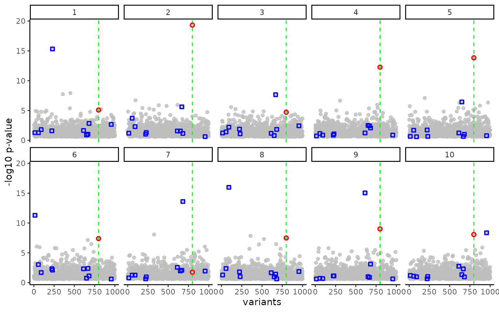
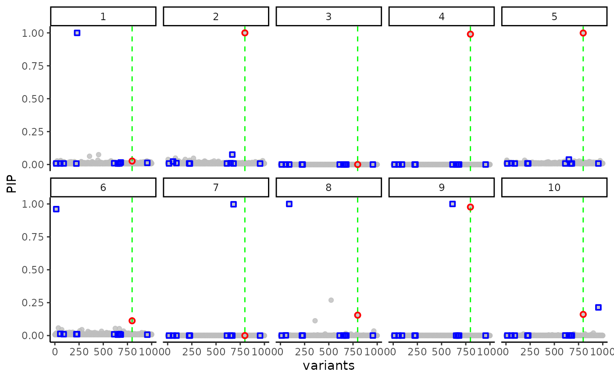
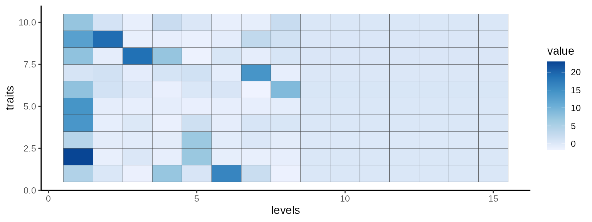
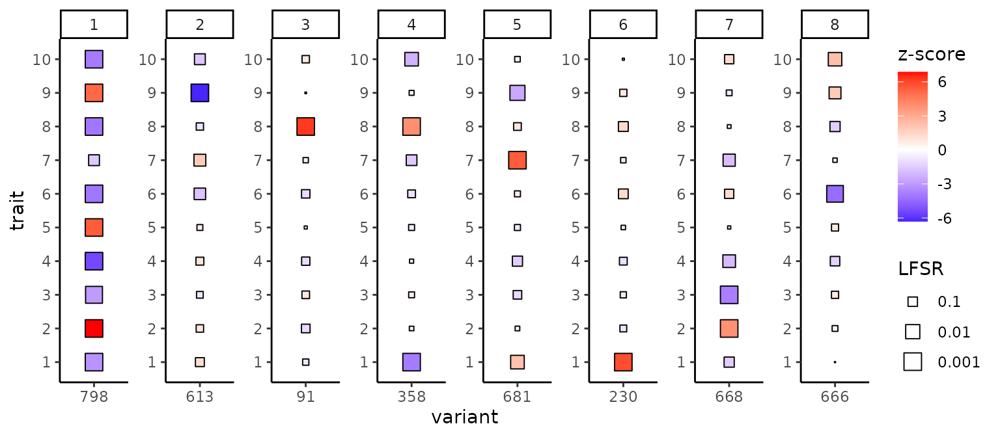
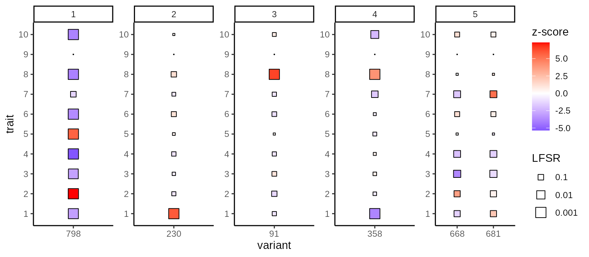

mtSusie.RmdHow can we distinguish shared effects across multiple traits from trait-specific effects? Inspired by susieR, we extend the integrative single-effect estimation steps to a multi-trait problem.
Let’s generate a toy example to illustrate the problem.
set.seed(1331)
.rnorm <- function(d1, d2) matrix(rnorm(d1*d2), d1, d2)
n <- 200 # sample size
p <- 1000 # number of predictors/variants
m <- 10 # traits/outcomes
h2 <- .2 # heritability/proportion of variance exampled by X
X <- .rnorm(n, p) # this can be replaced with a real genotype matrix
common <- sample(p, 1) # common effect across all the traits
.theta <- .rnorm(length(common), m) # the effect size may fluctuate
y <- X[, common, drop = FALSE] %*% .theta #
other <- c()
for(k in 1:m){
set.k <- sample(p, 1) # sample trait-specific ones
other <- c(other, set.k) #
y[, k] <- y[, k] + X[, set.k, drop=FALSE] %*% .rnorm(length(set.k), 1)
}
Y <- apply(y, 2, scale) * sqrt(h2) + .rnorm(n, m) * sqrt(1 - h2)After standardization, we can easily compute the z-score matrix.
plt <-
ggplot(z.melt, aes(x = Var1, y = -2 * pnorm(abs(z), lower.tail=FALSE, log.p=TRUE)/log(10))) +
xlab("variants") + ylab("-log10 p-value") +
facet_wrap(.~Var2, nrow = 2) +
geom_point(alpha=.8, colour="gray") +
geom_vline(xintercept = common, lty=2, color="green")
.melt <- z.melt %>% filter(`Var1` %in% common)
plt <- plt + geom_point(data = .melt, color="red", pch=21, stroke=1)
.melt <- z.melt %>% filter(`Var1` %in% other)
plt <- plt + geom_point(data = .melt, color="blue", pch=22, stroke=1)
print(plt)
Here, we marked the shared causal variant with the red circles and trait-specific ones with the blue squares.
susieR independently for each trait to find credible sets?
susie.result <- NULL
for(l in 1:ncol(Y)){
susie.l <- susieR::susie(X, Y[,l])
susie.result <- rbind(susie.result, data.frame(Var1 = 1:ncol(X), Var2 = l, pip = susie.l$pip))
}
plt <-
ggplot(susie.result, aes(x = Var1, y = pip)) +
xlab("variants") + ylab("PIP") +
facet_wrap(.~Var2, nrow = 2) +
geom_point(alpha=.8, colour="gray") +
geom_vline(xintercept = common, lty=2, color="green")
.melt <- susie.result %>% filter(`Var1` %in% common)
plt <- plt + geom_point(data = .melt, color="red", pch=21, stroke=1)
.melt <- susie.result %>% filter(`Var1` %in% other)
plt <- plt + geom_point(data = .melt, color="blue", pch=22, stroke=1)
print(plt)
Okay, it works well. However, it doesn’t take full advantage of a multi-trait regression setting. First, we can see that the shared variants are dropped in many traits. Moreover, when the shared one is selected, the other trait-specific effect is often not selected. Can we identify all the variants that may have contributed to any of the traits?
Here comes our mtSusie (multi-trait Sum of Single Effects) model. The idea is a simple modification to the original susieR method. For each level/layer, we aggregate the log Bayes Factors across multiple traits. Yes, it was that simple.
## Fitting mtSusie ...## DoneWhich traits do we combine at each level?
.dt <- reshape2::melt(mt.susie$log.odds)
ggplot(.dt, aes(Var1, Var2, fill=value)) +
geom_tile(colour="gray20", size=.1) +
xlab("levels") + ylab("traits") +
scale_fill_distiller(direction=1)
.dt <- reshape2::melt(mt.susie$alpha) %>%
filter(Var2 <= 10)
plt <-
ggplot(.dt, aes(Var1, value)) +
facet_wrap(.~Var2, nrow = 2) +
ylab("PIP") + xlab("variants") +
geom_point(colour="gray", size=2)
.melt <- .dt %>% filter(`Var1` %in% common)
plt <- plt + geom_point(data = .melt, color="red", pch=21, stroke=1)
.melt <- .dt %>% filter(`Var1` %in% other)
plt <- plt + geom_point(data = .melt, color="blue", pch=22, stroke=1)
print(plt)
Once we have identified a “union” of all the causal variants across all the traits, we can assign trait-specific effects based on variant-by-variant statistics at each level/layer. At each level, mtSusie will select a causal variant shared across traits, but not all the traits will support it and result in trait-specific local false sign rate (LFSR) values.
.dt <- data.table::setDT(mt.susie$cs)
.show <- unique(.dt[alpha > .1]$variants)
.dt <- .dt[variants %in% .show]
ggplot(.dt, aes(x=as.factor(variants), y=as.factor(traits))) +
facet_wrap(.~`levels`, scales="free", nrow=1) +
xlab("variant") + ylab("trait") +
geom_point(aes(fill=`z`, size=-log10(pmax(`lfsr`,1e-3))), pch=22) +
scale_size_continuous(range = c(0,5), "LFSR", labels=function(x) round(10^(-x), 3)) +
scale_fill_gradient2("z-score", mid="white", high="red", low="blue")